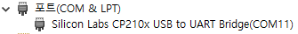
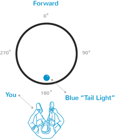
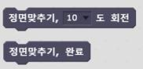
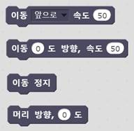
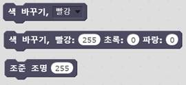
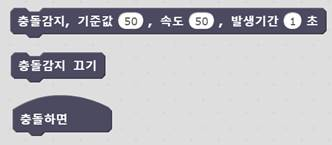

스크래치X 확장기능
Sphero SPRK+
v0.1
(2017.02.23)
내용
Scratch X는 현재 Beta 공개 상태이며, JavaScript 기반으로 동작하므로 브라우저 접속을 하여 실행/편집을 할 수 있습니다.
Scratch X에서 이 확장 기능을 사용하려면 반드시 별도의 장치(USB 동글)가 필요 합니다.
(별도 장치는 추후 공개 예정임)
|
1. 크롬 브라우저 설치하기 * Windows 10/8.1/8/7 * Mac OS X 10.9 이상 공식 다운로드 경로: https://www.google.com/chrome/
2. 크롬 브라우저에서 사용할 확장 기능(Plugin) 설치하기 (택 1) * 브라우저로 다운로드 후 설치 하는 경우 (Windows, Mac OS) * 크롬 브라우저에서 직접 설치 하는 경우 (Windows, Mac OS) [주의 사항] 사용자 PC 환경에 따라서는 관리자 권한으로 실행해야 확장 기능이 동작할 수 있습니다. 설치 환경에 대한 공식 설명 사이트 참고: https://scratch.mit.edu/info/ext_download/ |
* 사용자의 PC 환경에 따라서는 별도의 드라이버를 설치해야 합니다.
USB동글을 PC에 연결한 이후에 장치관리자에 아래와 같은 CP210x 장치가 발견되지 않을 경우에는 장치 Driver를 다운로드 (Windows, Mac OS)해서 설치하세요. (COM번호는 사용자 환경마다 다릅니다.)

Scratch X 와 연결되는 확장 프로그램(Plugin)이 동작하지 않는 경우에 빨간색이 표시됩니다.
확장 프로그램이 설치되어 있는지 다시 확인 바랍니다. 확장 프로그램이 설치되어 있다면, 크롬 브라우저를 다시 실행해 주세요.
확장 프로그램이 정상적으로 동작이며, USB동글과 SPRK+의 연결을 확인 중인 상태를 의미 합니다. SPRK+와 연결된 상태가 아닙니다.
PC에 연결된 USB동글이 정상적으로 연결되었는지 확인 바라며, USB동글이 정상적으로 연결되어 있다면, SPRK+를 USB동글 근처에 놓아 주시기 바랍니다.
이 상태가 장시간 유지된다면, 크롬 브라우저를 종료시킨 후 다시 실행해 주시기 바랍니다.
확장 프로그램이 정상적으로 동작하며, 외부 장치를 통해서 SPRK+와 통신이 잘 되는 상태 입니다.
|
 |
사용자가 SPRK+를 보고 있는 방향을 기준으로 각도를 지정하게 됨. 방향을 맞추기 위한 파란색 조준램프가 내장되어 있음. 조준 램프를 보고 있는 방향으로 맞추면 180도 방향으로 설정됨. (움직이는 방향이 맞지 않을 경우에는 반드시 정면 맞추기를 해야 함) |

정면 맞추기(Aiming)을 하기 위한 기능을 제공한다.
정면 맞추기를 수행하고 난 이후에는 반드시 완료 명령을 전송해야 함. (실행예제)
[회전각도]
정면 맞추기를 동작 시 회전하는 각도를 선택한다. 선택 값 à 5, 10, 15, 30, 45
[정면 맞추기 절차]
1) 조준 조명 켜기 à 어느 방향에 초점이 있는지 확인용
2) 정면 맞추기 회전 명령 전송
3) 머리 방향 초기화 à 최종 상태를 기준점으로 설정하기 위해 전송함.
4) 정면 맞추기 완료
5) 조준 조명 끄기

이동 하는 방향과 속도를 지정합니다. 방향은 SPRK+가 인식하는 각도이며, 속도는 상대적인 크기를 의미합니다. (실행예제)
[주의사항] 전달된 명령은 “정지” 명령이 전달되기 전까지는 일정 시간 지속 됨.
[이동 방향]
이동하는 방향(각도)에 대한 값을 지정합니다. (값 범위: 0 ~ 359)
ü 앞으로 à 0도 방향
ü 뒤로 à 180도 방향
ü 왼쪽 à 270도 방향
ü 오른쪽 à 90도 방향
[이동 속도]
이동하는 속도의 크기를 지정합니다. (값 범위: 0 ~ 255)
ü 정지 à 0
ü 최대 속도 à 255
[머리 방향]
이동하기 전에 머리 방향을 돌리는 동작이 이루어지며, 별도의 명령으로 머리 방향만 지정할 수 있습니다. (값 범위: 0~359
[주의사항] 머리 방향을 돌리는 것이 이동을 의미하는 것은 아님

LED조명색을 바꾸거나 조준 램프를 켜거나 밝기를 조정 할 수 있습니다. (실행예제)
[LED색 바꾸기]
ü 색깔 à 빨강, 주황, 노랑, 초록, 하늘, 파랑, 보라, 흰색, 끄기
[LED색 조정하기]
색깔의 빨강, 초록, 파랑 값을 조합하여 색을 만들 수 있습니다. (색깔 값 범위: 0~255)
ü 빨강 à 255, 0, 0
ü 주황 à 255, 128, 0
ü 노랑 à 255, 255 0
ü 초록 à 0, 255, 0
ü 하늘 à 0, 128, 255
ü 파랑 à 0, 0, 255
ü 보라 à 255, 0, 255
ü 흰색 à 255, 255, 255
ü 끄기 à 0, 0, 0
[조준 램프]
조준 램프를 켜고 끌 수 있으며, 밝기를 조정합니다.
ü 밝기 à 0 ~ 255 (0: 끄기)

SPRK+ 내부에 내장된 충돌 감지 기능을 이용하여, 충돌을 감지 할 수 있습니다. (실행예제)
[충돌감지 설정]
충돌감지 값이 전달되면, 기능이 동작하게 됩니다. 지정된 값(충격 정도와 충격 유지 시간)을 기준으로 SPRK+가 스스로 계산을 해서 충돌 이벤트를 보내주게 됩니다.
[기준값]
속도에 비례한 충격으로 인지하는 기준치 (값 범위: 0 ~ 255)
[속도]
충격 기준값을 계산하기 위해서 사용되는 속도 값이며, 속도가 빠를수록 충격이 크기 때문에 반드시 이동하고 있는 예상하는 속도 값을 지정해야 함. (값 범위: 0 ~ 255)
[발생 시간]
충격이 기준 값을 초과하면서 유지되는 시간을 지정한다. 지정된 시간 동안 충격이 유지되어야만 이벤트가 발생함. (값 범위: 0 ~ 2.5 초)
[충돌감지 이벤트]
이벤트가 동작하기 위해서는 충돌감지 기능이 켜져 있어야 합니다.